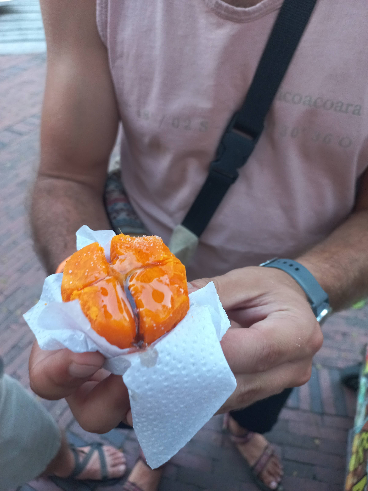
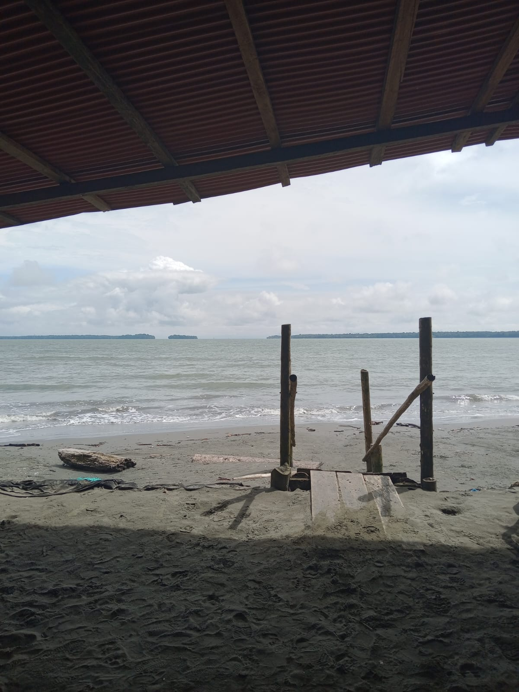

Authentic Cali Experiences
From hidden waterfalls to local salsa secrets, discover the real Cali with a guide who calls it home.

Street Food Tour in Cali
Taste authentic street food while discovering the stories that give Cali its flavor.

Galer�a Alameda Market Tour
Explore the vibrant local market and discover exotic fruits and traditional foods.

Cali Coffee Tasting
Discover Colombian coffee through a guided tasting led by a professional barista.

CAFETAL: Coffee Farm Visit in Andes
Visit a working coffee farm in the Andean mountains and learn the complete coffee process.

ChocoTour: Make Your Own Chocolate on a Cacao Farm
Visit a cacao farm and learn to make your own chocolate from bean to bar.

Cali Salsa Tour � Dance, Culture & History
Experience the world capital of salsa with dance lessons and cultural immersion.

Cristo Rey Viewpoint + Downtown Cali City Tour
Get panoramic views from Cristo Rey and explore historic downtown Cali.

Hummingbird Paradise Tour � Finca Alejandr�a
Visit a hummingbird sanctuary and observe dozens of species in their natural habitat.

Pance River Waterfall Tour � Chorrera del Indio
Hike to beautiful waterfalls in the Pance River area and swim in natural pools.

Whale Watching in Bah�a Málaga
Witness magnificent humpback whales during their annual migration.